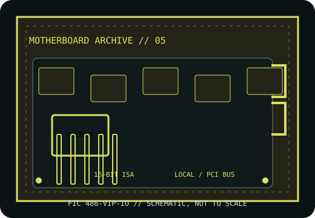

[ HISTORICAL SYSTEM BOARD // IDENTIFIED MODEL ]
FIC 486-VIP-IO
Socket 3 PCI/VLB 486 motherboard, circa 1994. This record distinguishes the exact model from related variants and requires revision-matched documentation for service.

IDENTIFY THE PCB: Record model suffix, board revision, chipset markings, BIOS label and date codes before applying any family-level compatibility information.
Model specifications
| Exact model | FIC 486-VIP-IO |
|---|---|
| Generation / chipset | Socket 3 PCI/VLB 486 motherboard, circa 1994; SiS 496/497-class PCI/VLB 486 chipset family; verify bridge markings on the specific board. |
| CPU socket / processor | Socket 3 486 SX/DX/DX2/DX4-class processors; exact CPU, voltage, clock and multiplier support follows the VIP-IO PCB revision and jumper table. |
| RAM technology / capacity | 30-pin SIMM and 72-pin SIMM support on documented versions; usable capacity and mixed-bank rules differ by revision, so populate only as its manual specifies. |
| Form factor | Baby AT. |
| Bus, slots & I/O | PCI, VLB and 16-bit ISA expansion documented for the VIP-IO family; IDE, floppy, serial, parallel and keyboard I/O. Verify individual slot population and headers against the board layout. |
| Jumpers / BIOS compatibility | AMI BIOS family; the CPU voltage/clock and onboard-I/O configuration are jumper-controlled. The FIC VIP-IO jumper sheet is model-specific and should accompany the board. |
Jumper, BIOS & compatibility notes
Do not substitute 486-VIP-IO settings from the superficially similar 486-VIP-IO2 or other VIP boards. Confirm exact silk-screen and revision, BIOS label, RAM banks and CPU jumpers.
AMI BIOS family; the CPU voltage/clock and onboard-I/O configuration are jumper-controlled. The FIC VIP-IO jumper sheet is model-specific and should accompany the board. Matching socket or connector geometry alone does not establish CPU, memory or firmware compatibility.
Safety & preservation
ESD-safe service; note all jumper shunts and memory before cleaning. Inspect battery leakage, VLB connector damage, socket and capacitors. Confirm the AT P8/P9 orientation and PSU rails before power-up.
Preserve provenance, original labels, jumpers and test conditions. Photograph the board before repair; avoid aggressive cleaning or desoldering until corrosion and component risks are documented.
Manufacturer and archive manuals
- FIC 486-VIP-IO board/manual archive — ELHVBHistorical board identification and archived setup documentation.
- FIC 486-VIP-IO manuals and scans — The Retro WebBoard-specific archive entry with preserved documents; confirm the revision before applying settings.
- FIC 486-VIP-IO BIOS image record — Internet ArchiveArchived 426GN2 ROM image associated with this model; not a substitute for verifying the installed BIOS.
Archived copies may cover another board revision. Compare manual diagrams and revision identifiers with the physical PCB; do not flash firmware or set voltage jumpers from a related model's manual.